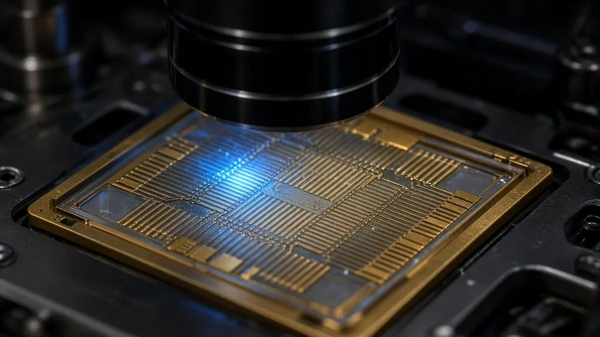

Quantinuum says Helios hit 99.9995% logical fidelity, a tenfold error-correction record
Short answer: Quantinuum announced on 19 October 2026 that its Helios commercial quantum computer achieved a logical fidelity of 99.9995%, which the company says equals about five errors in a million operations. Quantinuum calls it a world record for quantum error correction.
According to the company, the error rate is 10 times lower than the record Quantinuum itself set in September 2026 and 100 times lower than the best published result on any other hardware type, which it says was reported by Google Quantum AI on a superconducting system.

The result used a well-known error-correcting scheme called a color code. Quantinuum says logical errors fell exponentially as it increased the code distance, with each tested step cutting the remaining errors by what it calls a record factor of 12.
The trade-off is qubit overhead. On Helios, Quantinuum says its earlier Helix code used 10 physical qubits per logical qubit, while the color code used up to 37, in exchange for lower logical error rates. Both studies ran on the same hardware.
Quantinuum says the accuracy is now within the target range for Apollo, its planned universal fault-tolerant quantum computer, which it expects to be available by 2029.